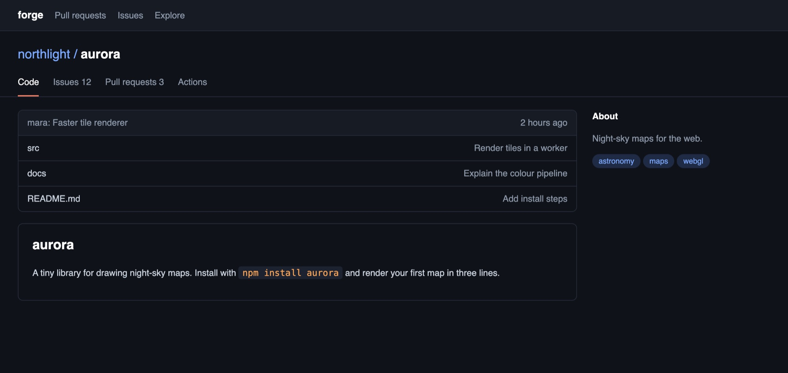
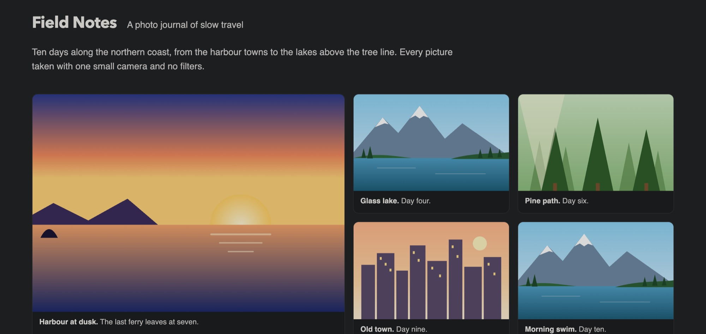
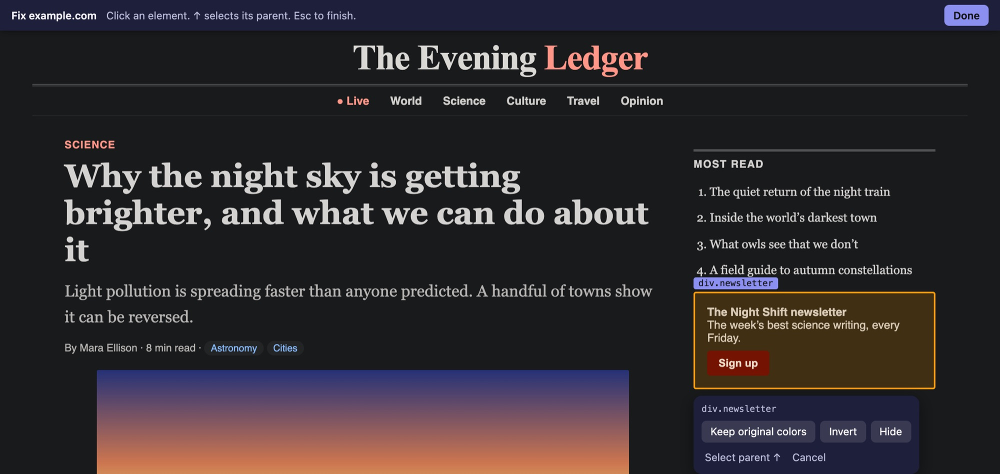

A Safari extension for Mac
The dark mode Safari is missing.
Every website in dark mode, the moment your Mac is. No white flash while pages load, no darkening sites that are already dark, and photos that still look like photos.
$1.99 once · macOS 14 or later · No data collected
Dark mode that gets the details right
The things that make other dark mode extensions annoying, handled.
No white flash
Dark from the very first frame
Most dark mode extensions let each page appear white, then darken it a moment later. Dimly has Safari paint a dark background before the page shows, then switches straight to the site's dark theme, remembered from your last visit.
- Text checked against what's behind it, and lifted when it's hard to read
- Surfaces keep their depth, brand colors keep their hue
Smart about every site
Leaves dark sites alone
Sites that are already dark keep their own design. Sites that have a dark theme get it, even when your Mac is in Light mode. If a site is ever misjudged, one click corrects it.
- Checks what the page declares, and what it actually looks like
- Remembers its verdict, so known dark sites are never touched

Photos stay photos
Pictures are never inverted
Backgrounds and text go dark. Photos and videos are dimmed a touch so they don't glare, by as much as you like. Small dark icons that would vanish are flipped to stay visible.

You're in charge
Fix any site yourself
If something looks wrong, point at it: keep its original colors, invert it, or hide it. The fix is saved for that site and can be undone. Copy your fixes to share them.

And all the small things
Follows your Mac
Dark when macOS is dark, light when it's light. Or always on.
Sunset to sunrise
Worked out from your time zone, no location access. Or set your own hours.
One key per site
⌃⇧D switches the site you're on. ⌃⇧O peeks at the original.
Readable text
Every text color meets a contrast floor, even at lower brightness.
Fast on big pages
Huge, constantly changing pages switch to a lighter mode automatically.
Private
No account, no analytics, no data collected. Settings stay on your Mac.
Dimly: Dimly
$1.99 once
- One-time purchase, no subscription
- Every feature included
- macOS 14 or later, Apple silicon and Intel
- Free updates
Prices in other countries are set by the App Store.
Questions
Why does it need access to every website?
Because it restyles whichever page you're looking at. Safari asks before an extension can change a page; allowing it everywhere means every site goes dark without asking each time. It reads pages only to restyle them, on your Mac, and sends nothing anywhere.
What happens on sites that already have a dark mode?
They keep it. If a site is dark on its own, Dimly leaves it alone. If it has a dark theme that only shows when your Mac is dark, that theme is used. If a site is misjudged, open the toolbar popup and choose "This site is already dark" or "Darken it anyway".
Will it slow Safari down?
On most pages you won't notice it. Very large pages that keep changing their styles are switched to a lighter mode automatically, and you can switch any site to it yourself from the popup.
Something looks wrong on a site. What can I do?
In the toolbar popup, open "Looks wrong on this site?". You can mark the site as already dark, switch it to simple mode, or use "Fix this site" to keep, invert or hide a single element. You can also switch dark mode off for that site.
What data does it collect?
None. It has no analytics, no tracking and no account, and it never sends anything to the developer. Read the privacy policy.
Can I hide the toolbar button?
Yes. Choose View, then Customize Toolbar, in Safari and drag the button off. Dark mode keeps working, and ⌃⇧D still switches the current site.
Is there an iPhone or iPad version?
It's planned, as part of the same purchase. For now Dimly is for Safari on the Mac.
What is it built on?
The recoloring engine is the open-source Dark Reader project (MIT License). Dimly adds the parts that make it work well in Safari: the no-flash start, dark-site detection, readable-text checks, the popup and the per-site fixes.